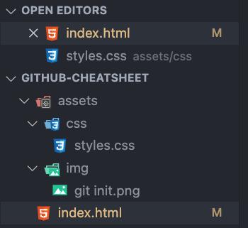
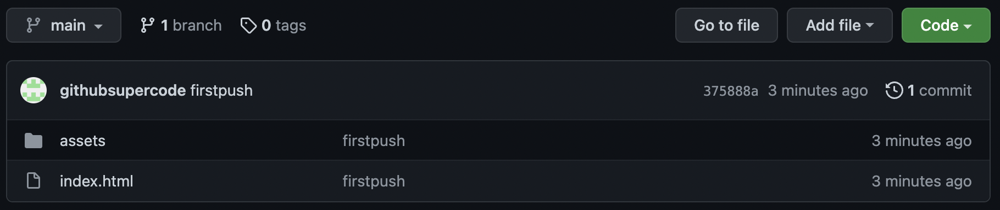
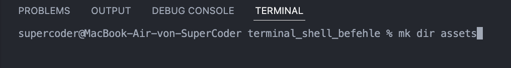

Was ist Git ?
Git und Github sind nicht das gleiche! Git ist ein VSC-Tool und GitHub ist eine Plattform die Git benutzt, es gibt auch andere zb. GitLab, GitBucket, BitBucket, Sourceforge und so weiter.
Git wird überall benutzt und ist eins der wichtigsten Tools für Entwickler geworden. Dadurch können Entwickler von überall zusammenarbeiten.
Git ist ein Versionverwaltungstool, das bei jedem comitten eine Art Schnappschuss von deinem Projekt macht. Hinterher hat man einen Stapel von Schnappschüssen.

Staged Area = Index → Daten werden für den commit vorgemerkt sind aber noch nicht hochgeladen

Lokal = Working Directory → Änderungen werden als Modified dargestellt

.git directory repository → Daten sind von lokal auf git geklont worden und stehen als snapshot bereit
Terminal
Befehle
Touch Befehl
Der Befehl "touch" erstellt eine Datei wie im Bild zu sehen. In diesem Beispiel wurde eine index.html erstellt.
MKDIR Befehl
Der Befehl "mkdir" erstellt einen neuen Ordner. In diesem Beispiel wurde eine ganze Ordnerstruktur erstellt.
Ordnerstruktur
Ein Beispiel für eine Ordnerstruktur die mit dem Befehl "mkdir" erstellt worden ist.

LS Befehl
ls 'list directory' : Zeigt uns alle Dateien/Ordner im verzeichnis an
LS-L Befehl
ls 'list directory' : Zeigt uns alle Dateien/Ordner im Verzeichnis an, nur ausführlicher.
LS-A Befehl
ls -a 'list directory' : Zeigt uns alle Dateien, auch die versteckten.
CD Befehl
cd 'change directory' : Mit cd können wir in unserem Verzeichnis navigieren
Cat Befehl
cat 'concatenate' : Kann ich mir den Inhalt von Dateien im Terminal anzeigen lassen.
MV Befehl
mv 'move/rename' : Verschiebt Dateien und kann Sie umbenennen. In diesem Beispiel wurde die about.html aus dem root ordner in den Assets Ordner verschoben
PWD Befehl
pwd 'print working directory' : Zeigt uns von Root Verzeichnis aus wo wir uns befinden